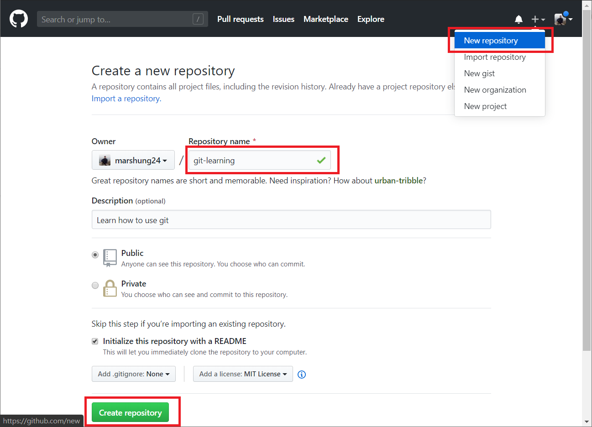
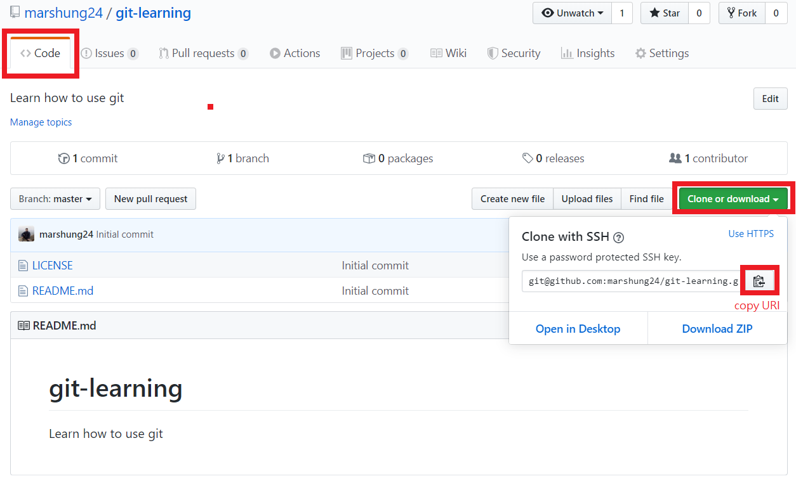
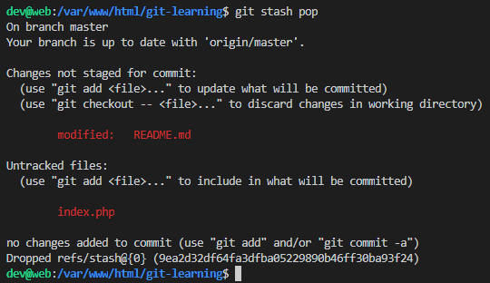

<!DOCTYPE html>
<html>
<head><meta name="generator" content="Hexo 3.8.0">
  <meta charset="utf-8">
  
  <title>Git常用指令學習 | Mars&#39;s Blog</title>
  <meta name="viewport" content="width=device-width, initial-scale=1, maximum-scale=1">
  <meta name="description" content="一、說明版本控制在軟體開發中非常重要，有了版本控制不但可以記錄軟體變動脈絡，還能多線開發、合併、摘取、回遡、差異比對等功能，在團隊合作中尤其重要。   版本控制用指令很多，在只介紹Git在開發中的常用指令。 二、環境準備 於 GitHub 中建立 repository: git-learning    登入Github並點選右上角＋號，再選New repository 填寫資料   取得 repo">
<meta name="keywords" content="dev,tools,git">
<meta property="og:type" content="article">
<meta property="og:title" content="Git常用指令學習">
<meta property="og:url" content="https://blog.mars-world.net/2019/12/07/git-learning/index.html">
<meta property="og:site_name" content="Mars&#39;s Blog">
<meta property="og:description" content="一、說明版本控制在軟體開發中非常重要，有了版本控制不但可以記錄軟體變動脈絡，還能多線開發、合併、摘取、回遡、差異比對等功能，在團隊合作中尤其重要。   版本控制用指令很多，在只介紹Git在開發中的常用指令。 二、環境準備 於 GitHub 中建立 repository: git-learning    登入Github並點選右上角＋號，再選New repository 填寫資料   取得 repo">
<meta property="og:locale" content="default">
<meta property="og:image" content="https://blog.mars-world.net/2019/12/07/git-learning/git-create-repository.png">
<meta property="og:image" content="https://blog.mars-world.net/2019/12/07/git-learning/git-get-uri.png">
<meta property="og:image" content="https://blog.mars-world.net/2019/12/07/git-learning/git-clone.png">
<meta property="og:image" content="https://blog.mars-world.net/2019/12/07/git-learning/git-push.png">
<meta property="og:image" content="https://blog.mars-world.net/2019/12/07/git-learning/git-log.png">
<meta property="og:image" content="https://blog.mars-world.net/2019/12/07/git-learning/git-reflog.png">
<meta property="og:image" content="https://blog.mars-world.net/2019/12/07/git-learning/git-status.png">
<meta property="og:image" content="https://blog.mars-world.net/2019/12/07/git-learning/git-add-file.png">
<meta property="og:image" content="https://blog.mars-world.net/2019/12/07/git-learning/git-reset-head-file.png">
<meta property="og:image" content="https://blog.mars-world.net/2019/12/07/git-learning/git-stash.png">
<meta property="og:image" content="https://blog.mars-world.net/2019/12/07/git-learning/git-stash-list.png">
<meta property="og:image" content="https://blog.mars-world.net/2019/12/07/git-learning/git-stash-pop.png">
<meta property="og:image" content="https://blog.mars-world.net/2019/12/07/git-learning/git-commit.png">
<meta property="og:image" content="https://blog.mars-world.net/2019/12/07/git-learning/git-branch.png">
<meta property="og:image" content="https://blog.mars-world.net/2019/12/07/git-learning/git-branch-create.png">
<meta property="og:image" content="https://blog.mars-world.net/2019/12/07/git-learning/git-branch-delete.png">
<meta property="og:updated_time" content="2023-05-20T03:20:37.975Z">
<meta name="twitter:card" content="summary">
<meta name="twitter:title" content="Git常用指令學習">
<meta name="twitter:description" content="一、說明版本控制在軟體開發中非常重要，有了版本控制不但可以記錄軟體變動脈絡，還能多線開發、合併、摘取、回遡、差異比對等功能，在團隊合作中尤其重要。   版本控制用指令很多，在只介紹Git在開發中的常用指令。 二、環境準備 於 GitHub 中建立 repository: git-learning    登入Github並點選右上角＋號，再選New repository 填寫資料   取得 repo">
<meta name="twitter:image" content="https://blog.mars-world.net/2019/12/07/git-learning/git-create-repository.png">
  
  
  
    <link href="//fonts.googleapis.com/css?family=Source+Code+Pro" rel="stylesheet" type="text/css">
  

  <link rel="stylesheet" href="https://maxcdn.bootstrapcdn.com/bootstrap/3.3.6/css/bootstrap.min.css" integrity="sha384-1q8mTJOASx8j1Au+a5WDVnPi2lkFfwwEAa8hDDdjZlpLegxhjVME1fgjWPGmkzs7" crossorigin="anonymous">

  <link rel="stylesheet" href="https://maxcdn.bootstrapcdn.com/font-awesome/4.5.0/css/font-awesome.min.css" integrity="sha384-XdYbMnZ/QjLh6iI4ogqCTaIjrFk87ip+ekIjefZch0Y+PvJ8CDYtEs1ipDmPorQ+" crossorigin="anonymous">

  <link rel="stylesheet" href="/css/styles.css">
  

</head>
</html>
<body>
  <nav class="navbar navbar-inverse">
  <div class="container">
    <!-- Brand and toggle get grouped for better mobile display -->
    <div class="navbar-header">
      <button type="button" class="navbar-toggle collapsed" data-toggle="collapse" data-target="#main-menu-navbar" aria-expanded="false">
        <span class="sr-only">Toggle navigation</span>
        <span class="icon-bar"></span>
        <span class="icon-bar"></span>
        <span class="icon-bar"></span>
      </button>
      
    </div>

    <!-- Collect the nav links, forms, and other content for toggling -->
    <div class="collapse navbar-collapse" id="main-menu-navbar">
      <ul class="nav navbar-nav">
        
          <li><a class href="/index.html">Home</a></li>
        
          <li><a class href="/archives/">Archives</a></li>
        
          <li><a class href="https://github.com/marshung24">GitHub</a></li>
        
      </ul>

      <!--
      <ul class="nav navbar-nav navbar-right">
        
      </ul>
      -->
    </div><!-- /.navbar-collapse -->
  </div><!-- /.container-fluid -->
</nav>

  <div class="container">
    <div class="blog-header">
  <h1 class="blog-title">Mars&#39;s Blog</h1>
  
    <p class="lead blog-description">Mars&#39;s learning record</p>
  
</div>

    <div class="row">
        <div class="col-sm-8 blog-main">
          <article id="post-git-learning" class="article article-type-post" itemscope itemprop="blogPost">

  <header class="article-header">
    
  
    <h1 class="article-title" itemprop="name">
      Git常用指令學習
    </h1>
  


  </header>

  <div class="article-meta">
    <div class="article-datetime">
  <a href="/2019/12/07/git-learning/" class="article-date"><time datetime="2019-12-07T12:56:34.000Z" itemprop="datePublished">2019-12-07</time></a>
</div>

    <div class="article-author">Mars Hung</div>
    
  <div class="article-category">
    <a class="article-category-link" href="/categories/tools/">tools</a>
  </div>


    <div class="article-reading">
  
  <span id="busuanzi_container_page_pv">文章閱讀量<span id="busuanzi_value_page_pv"></span>次</span>
  
</div>

  </div>
  <div class="article-inner">

    <div class="article-entry" itemprop="articleBody">
      
        
<div id="toc">
    <ol class="toc"><li class="toc-item toc-level-1"><a class="toc-link" href="#一、說明"><span class="toc-text">一、說明</span></a></li><li class="toc-item toc-level-1"><a class="toc-link" href="#二、環境準備"><span class="toc-text">二、環境準備</span></a></li><li class="toc-item toc-level-1"><a class="toc-link" href="#三、指令介紹"><span class="toc-text">三、指令介紹</span></a><ol class="toc-child"><li class="toc-item toc-level-2"><a class="toc-link" href="#環境設定"><span class="toc-text">環境設定</span></a><ol class="toc-child"><li class="toc-item toc-level-3"><a class="toc-link" href="#設定Git操作者的名子與信箱"><span class="toc-text">設定Git操作者的名子與信箱</span></a></li><li class="toc-item toc-level-3"><a class="toc-link" href="#語系設定"><span class="toc-text">語系設定</span></a></li><li class="toc-item toc-level-3"><a class="toc-link" href="#編輯器"><span class="toc-text">編輯器</span></a></li></ol></li><li class="toc-item toc-level-2"><a class="toc-link" href="#與遠端協同工作"><span class="toc-text">與遠端協同工作</span></a><ol class="toc-child"><li class="toc-item toc-level-3"><a class="toc-link" href="#下載遠端-repository"><span class="toc-text">下載遠端 repository</span></a></li><li class="toc-item toc-level-3"><a class="toc-link" href="#推送至遠端"><span class="toc-text">推送至遠端</span></a></li><li class="toc-item toc-level-3"><a class="toc-link" href="#獲取遠端記錄"><span class="toc-text">獲取遠端記錄</span></a></li><li class="toc-item toc-level-3"><a class="toc-link" href="#獲取並合併"><span class="toc-text">獲取並合併</span></a></li></ol></li><li class="toc-item toc-level-2"><a class="toc-link" href="#查看記錄"><span class="toc-text">查看記錄</span></a><ol class="toc-child"><li class="toc-item toc-level-3"><a class="toc-link" href="#查看記錄-1"><span class="toc-text">查看記錄</span></a></li><li class="toc-item toc-level-3"><a class="toc-link" href="#查看HEAD的移動記錄"><span class="toc-text">查看HEAD的移動記錄</span></a></li></ol></li><li class="toc-item toc-level-2"><a class="toc-link" href="#檔案變動管理"><span class="toc-text">檔案變動管理</span></a><ol class="toc-child"><li class="toc-item toc-level-3"><a class="toc-link" href="#查看目前變動"><span class="toc-text">查看目前變動</span></a></li></ol></li><li class="toc-item toc-level-2"><a class="toc-link" href="#暫存變動"><span class="toc-text">暫存變動:</span></a></li><li class="toc-item toc-level-2"><a class="toc-link" href="#取消暫存變動"><span class="toc-text">取消暫存變動:</span></a></li><li class="toc-item toc-level-2"><a class="toc-link" href="#收藏"><span class="toc-text">收藏</span></a><ol class="toc-child"><li class="toc-item toc-level-3"><a class="toc-link" href="#收藏變動"><span class="toc-text">收藏變動</span></a></li><li class="toc-item toc-level-3"><a class="toc-link" href="#查看收藏"><span class="toc-text">查看收藏:</span></a></li><li class="toc-item toc-level-3"><a class="toc-link" href="#取出收藏"><span class="toc-text">取出收藏:</span></a></li></ol></li><li class="toc-item toc-level-2"><a class="toc-link" href="#提交"><span class="toc-text">提交:</span></a></li><li class="toc-item toc-level-2"><a class="toc-link" href="#分支管理"><span class="toc-text">分支管理</span></a><ol class="toc-child"><li class="toc-item toc-level-3"><a class="toc-link" href="#查看分支"><span class="toc-text">查看分支</span></a></li><li class="toc-item toc-level-3"><a class="toc-link" href="#建立新分支"><span class="toc-text">建立新分支</span></a></li><li class="toc-item toc-level-3"><a class="toc-link" href="#刪除分支"><span class="toc-text">刪除分支</span></a></li><li class="toc-item toc-level-3"><a class="toc-link" href="#合併分支-git-merge"><span class="toc-text">合併分支: git merge </span></a></li></ol></li><li class="toc-item toc-level-2"><a class="toc-link" href="#切換分支-git-checkout"><span class="toc-text">切換分支: git checkout </span></a></li><li class="toc-item toc-level-2"><a class="toc-link" href="#清除變動檔案-git-checkout"><span class="toc-text">清除變動檔案: git checkout </span></a></li><li class="toc-item toc-level-2"><a class="toc-link" href="#清除分支所有變動-git-checkout-–"><span class="toc-text">清除分支所有變動: git checkout – .</span></a></li><li class="toc-item toc-level-2"><a class="toc-link" href="#變更工作目錄至commit-git-reset"><span class="toc-text">變更工作目錄至commit: git reset </span></a></li><li class="toc-item toc-level-2"><a class="toc-link" href="#建立tag-git-tag"><span class="toc-text">建立tag: git tag </span></a></li><li class="toc-item toc-level-2"><a class="toc-link" href="#推送tag-git-push-origin"><span class="toc-text">推送tag: git push origin </span></a></li><li class="toc-item toc-level-2"><a class="toc-link" href="#刪除tag-git-tag-d"><span class="toc-text">刪除tag: git tag -d </span></a></li><li class="toc-item toc-level-2"><a class="toc-link" href="#變基-git-rebase-i"><span class="toc-text">變基: git rebase -i </span></a></li><li class="toc-item toc-level-2"><a class="toc-link" href="#摘取-cherry-pick"><span class="toc-text">摘取: cherry-pick </span></a></li><li class="toc-item toc-level-2"><a class="toc-link" href="#worktree"><span class="toc-text">worktree</span></a></li></ol></li></ol>
</div>

        <h1 id="一、說明"><a href="#一、說明" class="headerlink" title="一、說明"></a>一、說明</h1><p>版本控制在軟體開發中非常重要，有了版本控制不但可以記錄軟體變動脈絡，還能多線開發、合併、摘取、回遡、差異比對等功能，在團隊合作中尤其重要。  </p>
<p>版本控制用指令很多，在只介紹Git在開發中的常用指令。</p>
<h1 id="二、環境準備"><a href="#二、環境準備" class="headerlink" title="二、環境準備"></a>二、環境準備</h1><ul>
<li><p>於 GitHub 中建立 repository: git-learning  </p>
<ul>
<li>登入Github並點選右上角＋號，再選New repository</li>
<li>填寫資料<br></li>
</ul>
</li>
<li><p>取得 repo: git-learning 的uri  </p>
<ul>
<li>進入git-learning後點選 clone or download，並複製網址<br><blockquote>
<p>上圖採用ssh方式與git連線</p>
</blockquote>
</li>
</ul>
</li>
</ul>
<h1 id="三、指令介紹"><a href="#三、指令介紹" class="headerlink" title="三、指令介紹"></a>三、指令介紹</h1><h2 id="環境設定"><a href="#環境設定" class="headerlink" title="環境設定"></a>環境設定</h2><h3 id="設定Git操作者的名子與信箱"><a href="#設定Git操作者的名子與信箱" class="headerlink" title="設定Git操作者的名子與信箱"></a>設定Git操作者的名子與信箱</h3><p>git使用前，需設定作者資訊<br><figure class="highlight plain"><table><tr><td class="gutter"><pre><span class="line">1</span><br><span class="line">2</span><br></pre></td><td class="code"><pre><span class="line">$ git config --global user.name &#123;我的名子&#125;</span><br><span class="line">$ git config --global user.email &#123;我的信箱&#125;</span><br></pre></td></tr></table></figure></p>
<blockquote>
<p>註：<code>{我的名子}</code>,<code>{我的信箱}</code>代表變數，在此輸入Git操作者名子,信箱</p>
</blockquote>
<h3 id="語系設定"><a href="#語系設定" class="headerlink" title="語系設定"></a>語系設定</h3><p>Linux環境下git操作需設定執行語系，以免看到亂碼<br><figure class="highlight plain"><table><tr><td class="gutter"><pre><span class="line">1</span><br><span class="line">2</span><br><span class="line">3</span><br><span class="line">4</span><br></pre></td><td class="code"><pre><span class="line">$ echo &quot;export LESSCHARSET=utf-8;&quot; | sudo tee -a ~/.bashrc</span><br><span class="line">$ echo &quot;export LESSCHARSET=utf-8;&quot; | sudo tee -a /etc/bash.bashrc</span><br><span class="line">$ echo &quot;export LC_ALL=en_US.UTF-8;&quot; | sudo tee -a ~/.bashrc</span><br><span class="line">$ echo &quot;export LC_ALL=en_US.UTF-8;&quot; | sudo tee -a /etc/bash.bashrc</span><br></pre></td></tr></table></figure></p>
<blockquote>
<p>原因是 git log 預設是使用 less 這個工具來瀏覽，所以需要額外設定編碼。</p>
</blockquote>
<h3 id="編輯器"><a href="#編輯器" class="headerlink" title="編輯器"></a>編輯器</h3><p>設定操作git編輯時使用的編輯器，推荐vim或vi<br><figure class="highlight plain"><table><tr><td class="gutter"><pre><span class="line">1</span><br></pre></td><td class="code"><pre><span class="line">$ git config --global core.editor vim</span><br></pre></td></tr></table></figure></p>
<blockquote>
<p>將操作Git的編輯器設定成vim，如無vim可改用vi</p>
</blockquote>
<h2 id="與遠端協同工作"><a href="#與遠端協同工作" class="headerlink" title="與遠端協同工作"></a>與遠端協同工作</h2><p>Git工作分本地端(local)、遠端(remote)，自己在本地端的任何變更需推送(push)到遠端，其他人才可以獲取(fetch)自己的變動內容。</p>
<h3 id="下載遠端-repository"><a href="#下載遠端-repository" class="headerlink" title="下載遠端 repository"></a>下載遠端 repository</h3><p>下載遠端資源庫至本地端工作目錄中。</p>
<ul>
<li>指令 git clone<figure class="highlight bash"><table><tr><td class="gutter"><pre><span class="line">1</span><br><span class="line">2</span><br><span class="line">3</span><br></pre></td><td class="code"><pre><span class="line"><span class="comment"># 格式：git clone &lt;repo&gt; [&lt;directory&gt;]</span></span><br><span class="line"><span class="comment"># 範例：</span></span><br><span class="line">$ git <span class="built_in">clone</span> git@github.com:marshung24/git-learning.git</span><br></pre></td></tr></table></figure>
</li>
</ul>
<p></p>
<blockquote>
<ul>
<li>克隆目標資源庫</li>
<li>克隆成功後，可在執行目錄下看到剛剛克隆的專案目錄</li>
</ul>
</blockquote>
<h3 id="推送至遠端"><a href="#推送至遠端" class="headerlink" title="推送至遠端"></a>推送至遠端</h3><p>推送本地端變動至遠端。</p>
<ul>
<li>指令 git push<figure class="highlight bash"><table><tr><td class="gutter"><pre><span class="line">1</span><br><span class="line">2</span><br><span class="line">3</span><br></pre></td><td class="code"><pre><span class="line"><span class="comment"># 格式：git push</span></span><br><span class="line"><span class="comment"># 範例：</span></span><br><span class="line">$ git push</span><br></pre></td></tr></table></figure>
</li>
</ul>
<p></p>
<blockquote>
<ul>
<li>將本地commit推送至遠端伺服器</li>
<li>強制推送：git push -f</li>
</ul>
</blockquote>
<h3 id="獲取遠端記錄"><a href="#獲取遠端記錄" class="headerlink" title="獲取遠端記錄"></a>獲取遠端記錄</h3><p>獲取遠端的變動記錄。當他人有推送變動時，需使用本指令獲取最新記錄。</p>
<ul>
<li>指令 git fetch<figure class="highlight bash"><table><tr><td class="gutter"><pre><span class="line">1</span><br><span class="line">2</span><br><span class="line">3</span><br></pre></td><td class="code"><pre><span class="line"><span class="comment"># 格式：git fetch</span></span><br><span class="line"><span class="comment"># 範例：</span></span><br><span class="line">$ git fetch</span><br></pre></td></tr></table></figure>
</li>
</ul>
<blockquote>
<ul>
<li>當多人協同作業時，要看到其他人推送至伺服器的結果時使用 git fetch 取得</li>
</ul>
</blockquote>
<h3 id="獲取並合併"><a href="#獲取並合併" class="headerlink" title="獲取並合併"></a>獲取並合併</h3><ul>
<li>指令 git pull <branch><figure class="highlight bash"><table><tr><td class="gutter"><pre><span class="line">1</span><br><span class="line">2</span><br><span class="line">3</span><br></pre></td><td class="code"><pre><span class="line"><span class="comment"># 格式：git pull &lt;branch&gt;</span></span><br><span class="line"><span class="comment"># 範例：</span></span><br><span class="line">$ git pull master</span><br></pre></td></tr></table></figure>
</branch></li>
</ul>
<blockquote>
<p>git pull 效果等於 git fetch 加 git merge</p>
</blockquote>
<h2 id="查看記錄"><a href="#查看記錄" class="headerlink" title="查看記錄"></a>查看記錄</h2><h3 id="查看記錄-1"><a href="#查看記錄-1" class="headerlink" title="查看記錄"></a>查看記錄</h3><ul>
<li>指令 git log<figure class="highlight bash"><table><tr><td class="gutter"><pre><span class="line">1</span><br><span class="line">2</span><br><span class="line">3</span><br></pre></td><td class="code"><pre><span class="line"><span class="comment"># 格式：git log</span></span><br><span class="line"><span class="comment"># 範例：</span></span><br><span class="line">$ git <span class="built_in">log</span></span><br></pre></td></tr></table></figure>
</li>
</ul>
<p></p>
<h3 id="查看HEAD的移動記錄"><a href="#查看HEAD的移動記錄" class="headerlink" title="查看HEAD的移動記錄"></a>查看HEAD的移動記錄</h3><ul>
<li>指令 git reflog<figure class="highlight bash"><table><tr><td class="gutter"><pre><span class="line">1</span><br><span class="line">2</span><br><span class="line">3</span><br></pre></td><td class="code"><pre><span class="line"><span class="comment"># 格式：git reflog</span></span><br><span class="line"><span class="comment"># 範例：</span></span><br><span class="line">$ git reflog</span><br></pre></td></tr></table></figure>
</li>
</ul>
<p></p>
<blockquote>
<ul>
<li>如果誤操作時，可用此找查之前的記錄</li>
<li>有commit過的檔案被蓋掉，可通過git reflog、git reset還原</li>
</ul>
</blockquote>
<h2 id="檔案變動管理"><a href="#檔案變動管理" class="headerlink" title="檔案變動管理"></a>檔案變動管理</h2><h3 id="查看目前變動"><a href="#查看目前變動" class="headerlink" title="查看目前變動"></a>查看目前變動</h3><ul>
<li>指令 git status<figure class="highlight bash"><table><tr><td class="gutter"><pre><span class="line">1</span><br><span class="line">2</span><br><span class="line">3</span><br><span class="line">4</span><br><span class="line">5</span><br><span class="line">6</span><br><span class="line">7</span><br><span class="line">8</span><br><span class="line">9</span><br><span class="line">10</span><br><span class="line">11</span><br></pre></td><td class="code"><pre><span class="line"><span class="comment"># 格式：git status</span></span><br><span class="line"><span class="comment"># 範例：</span></span><br><span class="line"><span class="comment"># 查看目錄下的檔案清單</span></span><br><span class="line">$ ls</span><br><span class="line">LICENSE  README.md</span><br><span class="line"><span class="comment"># 建立空檔案 index.php</span></span><br><span class="line">$ touch index.php</span><br><span class="line"><span class="comment"># 在檔案 README.md 最後增加一新行，文字為test</span></span><br><span class="line">$ <span class="built_in">echo</span> <span class="string">"test"</span> &gt;&gt; README.md </span><br><span class="line"><span class="comment"># 查看目前變動</span></span><br><span class="line">$ git status</span><br></pre></td></tr></table></figure>
</li>
</ul>
<p></p>
<blockquote>
<p>可看到一個檔案變動 README.md ，一個未處理檔案 index.php</p>
</blockquote>
<h2 id="暫存變動"><a href="#暫存變動" class="headerlink" title="暫存變動:"></a>暫存變動:</h2><ul>
<li>指令 git add <file><figure class="highlight bash"><table><tr><td class="gutter"><pre><span class="line">1</span><br><span class="line">2</span><br><span class="line">3</span><br><span class="line">4</span><br></pre></td><td class="code"><pre><span class="line"><span class="comment"># 格式：git add &lt;file&gt;</span></span><br><span class="line"><span class="comment"># 範例：</span></span><br><span class="line">$ git add README.md</span><br><span class="line">$ git status</span><br></pre></td></tr></table></figure>
</file></li>
</ul>
<p></p>
<blockquote>
<p>暫存變動，使用git status查看目前變動</p>
</blockquote>
<blockquote>
<p>暫存全部變動:<br>git add -u</p>
<blockquote>
<p>不含未處理過的檔案</p>
</blockquote>
<p>暫存全部變動:<br>git add .</p>
<blockquote>
<p>含未處理過的檔案</p>
</blockquote>
<p>暫存路徑變動: git add <dir></dir></p>
<blockquote>
<p>含未處理過的檔案</p>
</blockquote>
</blockquote>
<h2 id="取消暫存變動"><a href="#取消暫存變動" class="headerlink" title="取消暫存變動:"></a>取消暫存變動:</h2><ul>
<li>指令 git reset HEAD <file><figure class="highlight bash"><table><tr><td class="gutter"><pre><span class="line">1</span><br><span class="line">2</span><br><span class="line">3</span><br><span class="line">4</span><br></pre></td><td class="code"><pre><span class="line"><span class="comment"># 格式：git reset HEAD &lt;file&gt;</span></span><br><span class="line"><span class="comment"># 範例：</span></span><br><span class="line">$ git add README.md</span><br><span class="line">$ git status</span><br></pre></td></tr></table></figure>
</file></li>
</ul>
<p></p>
<blockquote>
<p>取消不小心 git add 的檔案</p>
</blockquote>
<h2 id="收藏"><a href="#收藏" class="headerlink" title="收藏"></a>收藏</h2><h3 id="收藏變動"><a href="#收藏變動" class="headerlink" title="收藏變動"></a>收藏變動</h3><ul>
<li>指令 git stash<figure class="highlight bash"><table><tr><td class="gutter"><pre><span class="line">1</span><br><span class="line">2</span><br><span class="line">3</span><br></pre></td><td class="code"><pre><span class="line"><span class="comment"># 格式：git stash</span></span><br><span class="line"><span class="comment"># 範例：</span></span><br><span class="line">$ git stash</span><br></pre></td></tr></table></figure>
</li>
</ul>
<p></p>
<blockquote>
<ul>
<li>承 查看目前變動 狀況下做git stash，只會收藏Git處理過的檔案，不會收藏Git未處理過的檔案</li>
<li>收藏後，檔案會回到變動前的狀況</li>
</ul>
</blockquote>
<h3 id="查看收藏"><a href="#查看收藏" class="headerlink" title="查看收藏:"></a>查看收藏:</h3><ul>
<li>指令 git stash list<figure class="highlight bash"><table><tr><td class="gutter"><pre><span class="line">1</span><br><span class="line">2</span><br><span class="line">3</span><br></pre></td><td class="code"><pre><span class="line"><span class="comment"># 格式：git stash list</span></span><br><span class="line"><span class="comment"># 範例：</span></span><br><span class="line">$ git stash list</span><br></pre></td></tr></table></figure>
</li>
</ul>
<p></p>
<blockquote>
<p>圖中可看到目前有一筆收藏</p>
</blockquote>
<h3 id="取出收藏"><a href="#取出收藏" class="headerlink" title="取出收藏:"></a>取出收藏:</h3><ul>
<li>指令 git stash pop<figure class="highlight bash"><table><tr><td class="gutter"><pre><span class="line">1</span><br><span class="line">2</span><br><span class="line">3</span><br></pre></td><td class="code"><pre><span class="line"><span class="comment"># 格式：git stash pop</span></span><br><span class="line"><span class="comment"># 範例：</span></span><br><span class="line">$ git stash pop</span><br></pre></td></tr></table></figure>
</li>
</ul>
<p></p>
<blockquote>
<p>取出收藏後，檔案會回到變動後的狀況</p>
</blockquote>
<h2 id="提交"><a href="#提交" class="headerlink" title="提交:"></a>提交:</h2><ul>
<li>指令 git commit<figure class="highlight bash"><table><tr><td class="gutter"><pre><span class="line">1</span><br><span class="line">2</span><br><span class="line">3</span><br><span class="line">4</span><br></pre></td><td class="code"><pre><span class="line"><span class="comment"># 格式：git commit</span></span><br><span class="line"><span class="comment"># 範例：</span></span><br><span class="line">$ git add README.md</span><br><span class="line">$ git commit</span><br></pre></td></tr></table></figure>
</li>
</ul>
<p></p>
<blockquote>
<ul>
<li>提交前(git commit)必需暫存變動(git add)</li>
<li>不進編輯器直接提交<ul>
<li>git commit -m “提交內容描述”</li>
</ul>
</li>
<li>修改最近的提交記錄<ul>
<li>git commit –amend</li>
</ul>
</li>
</ul>
</blockquote>
<h2 id="分支管理"><a href="#分支管理" class="headerlink" title="分支管理"></a>分支管理</h2><h3 id="查看分支"><a href="#查看分支" class="headerlink" title="查看分支"></a>查看分支</h3><ul>
<li>指令 git branch<figure class="highlight bash"><table><tr><td class="gutter"><pre><span class="line">1</span><br><span class="line">2</span><br><span class="line">3</span><br></pre></td><td class="code"><pre><span class="line"><span class="comment"># 格式：git branch</span></span><br><span class="line"><span class="comment"># 範例：</span></span><br><span class="line">$ git branch</span><br></pre></td></tr></table></figure>
</li>
</ul>
<p></p>
<blockquote>
<p>不加任何參數時為查看分支</p>
</blockquote>
<h3 id="建立新分支"><a href="#建立新分支" class="headerlink" title="建立新分支"></a>建立新分支</h3><ul>
<li>指令 git branch <branch> <base><figure class="highlight bash"><table><tr><td class="gutter"><pre><span class="line">1</span><br><span class="line">2</span><br><span class="line">3</span><br><span class="line">4</span><br><span class="line">5</span><br><span class="line">6</span><br></pre></td><td class="code"><pre><span class="line"><span class="comment"># 格式：git branch</span></span><br><span class="line"><span class="comment"># 範例：</span></span><br><span class="line"><span class="comment"># 以SHA-1 commit位置為基底建立branch_a</span></span><br><span class="line">$ git branch branch_a cbbb519abe0b959443c22aab38fe8cab9702eb2b</span><br><span class="line"><span class="comment"># 以master位置為基底建立branch_b</span></span><br><span class="line">$ git branch branch_b master</span><br></pre></td></tr></table></figure>
</branch></li>
</ul>
<p></p>
<blockquote>
<ul>
<li>不會checkout到該分支</li>
<li>推送剛建立的分支new_branch至遠端<ul>
<li>git push origin new_branch</li>
</ul>
</li>
</ul>
</blockquote>
<h3 id="刪除分支"><a href="#刪除分支" class="headerlink" title="刪除分支"></a>刪除分支</h3><ul>
<li>指令 git branch -d <branch><figure class="highlight bash"><table><tr><td class="gutter"><pre><span class="line">1</span><br><span class="line">2</span><br><span class="line">3</span><br><span class="line">4</span><br></pre></td><td class="code"><pre><span class="line"><span class="comment"># 格式：git branch -d &lt;branch&gt;</span></span><br><span class="line"><span class="comment"># 範例：</span></span><br><span class="line"><span class="comment"># 刪除分支new_branch (本地端)</span></span><br><span class="line">$ git branch -d new_branch</span><br></pre></td></tr></table></figure>
</branch></li>
</ul>
<p></p>
<blockquote>
<p>有未合併資料時不可刪</p>
</blockquote>
<blockquote>
<ul>
<li>強制刪除：git branch -D <branch></branch></li>
<li>刪除遠端分支：git push origin :<branch><ul>
<li>使用git push 並在分支名前加上冒號(:)</li>
</ul>
</branch></li>
</ul>
</blockquote>
<h3 id="合併分支-git-merge"><a href="#合併分支-git-merge" class="headerlink" title="合併分支: git merge "></a>合併分支: git merge <commit></commit></h3><h2 id="切換分支-git-checkout"><a href="#切換分支-git-checkout" class="headerlink" title="切換分支: git checkout "></a>切換分支: git checkout <branch></branch></h2><h2 id="清除變動檔案-git-checkout"><a href="#清除變動檔案-git-checkout" class="headerlink" title="清除變動檔案: git checkout "></a>清除變動檔案: git checkout <file></file></h2><h2 id="清除分支所有變動-git-checkout-–"><a href="#清除分支所有變動-git-checkout-–" class="headerlink" title="清除分支所有變動: git checkout – ."></a>清除分支所有變動: git checkout – .</h2><h2 id="變更工作目錄至commit-git-reset"><a href="#變更工作目錄至commit-git-reset" class="headerlink" title="變更工作目錄至commit: git reset "></a>變更工作目錄至commit: git reset <commit></commit></h2><p>只移動branch位置，不變動檔案</p>
<p>變更工作目錄至commit: git reset –hard <commit><br>移動branch位置，並重置檔案</commit></p>
<h2 id="建立tag-git-tag"><a href="#建立tag-git-tag" class="headerlink" title="建立tag: git tag "></a>建立tag: git tag <tag></tag></h2><h2 id="推送tag-git-push-origin"><a href="#推送tag-git-push-origin" class="headerlink" title="推送tag: git push origin "></a>推送tag: git push origin <tag></tag></h2><p>同等: git push origin refs/tags/<tag></tag></p>
<h2 id="刪除tag-git-tag-d"><a href="#刪除tag-git-tag-d" class="headerlink" title="刪除tag: git tag -d "></a>刪除tag: git tag -d <tag></tag></h2><p>刪除遠端tag: git push origin refs/tags/<tag><br>必需先把本地tag刪除(推送空tag)</tag></p>
<h2 id="變基-git-rebase-i"><a href="#變基-git-rebase-i" class="headerlink" title="變基: git rebase -i "></a>變基: git rebase -i <commit></commit></h2><h2 id="摘取-cherry-pick"><a href="#摘取-cherry-pick" class="headerlink" title="摘取: cherry-pick "></a>摘取: cherry-pick <commit></commit></h2><h2 id="worktree"><a href="#worktree" class="headerlink" title="worktree"></a>worktree</h2><p>git worktree add -b hotfix ../hotfix master<br>git worktree prune<br>git worktree list<br>git worktree lock</p>

      
    </div>

    
      

    

    <footer class="article-footer">
      <a data-url="https://blog.mars-world.net/2019/12/07/git-learning/" data-id="clhx3p4xo001h7wn6rwrgatxn" class="article-share-link">
        <i class="fa fa-share"></i> Share
      </a>
      
      
  <ul class="article-tag-list"><li class="article-tag-list-item"><a class="article-tag-list-link" href="/tags/dev/">dev</a></li><li class="article-tag-list-item"><a class="article-tag-list-link" href="/tags/git/">git</a></li><li class="article-tag-list-item"><a class="article-tag-list-link" href="/tags/tools/">tools</a></li></ul>


    </footer>
  </div>
  
    
<ul id="article-nav" class="nav nav-pills nav-justified">
  
  <li role="presentation">
    <a href="/2019/11/14/web-server-xampp-install/" id="article-nav-older" class="article-nav-link-wrap">
      <i class="fa fa-chevron-left pull-left"></i>
      <span class="article-nav-link-title">Web伺服器安裝(XAMPP)-Windows</span>
    </a>
  </li>
  
  
  <li role="presentation">
    <a href="/2019/12/07/mysql-microsecond/" id="article-nav-newer" class="article-nav-link-wrap">
      <span class="article-nav-link-title">MySQL時間型態的毫秒與微秒</span>
      <i class="fa fa-chevron-right pull-right"></i>
    </a>
  </li>
  
</ul>


  
</article>


        </div>
        <div class="col-sm-3 col-sm-offset-1 blog-sidebar">
          
  
  <div class="sidebar-module">
    <h4>Recents</h4>
    <ul class="sidebar-module-list">
      
        <li>
          <a href="/2019/12/07/mysql-microsecond/">MySQL時間型態的毫秒與微秒</a>
        </li>
      
        <li>
          <a href="/2019/12/07/git-learning/">Git常用指令學習</a>
        </li>
      
        <li>
          <a href="/2019/11/14/web-server-xampp-install/">Web伺服器安裝(XAMPP)-Windows</a>
        </li>
      
        <li>
          <a href="/2019/08/18/crud-design-04/">CRUD表單設計 Day-04 Javascript</a>
        </li>
      
        <li>
          <a href="/2019/08/17/crud-design-03/">CRUD表單設計 Day-03 安裝Bootstrap4</a>
        </li>
      
    </ul>
  </div>


  
  <div class="sidebar-module">
    <h4>Archives</h4>
    <ul class="sidebar-module-list"><li class="sidebar-module-list-item"><a class="sidebar-module-list-link" href="/archives/2019/12/">December 2019</a><span class="sidebar-module-list-count">2</span></li><li class="sidebar-module-list-item"><a class="sidebar-module-list-link" href="/archives/2019/11/">November 2019</a><span class="sidebar-module-list-count">1</span></li><li class="sidebar-module-list-item"><a class="sidebar-module-list-link" href="/archives/2019/08/">August 2019</a><span class="sidebar-module-list-count">4</span></li><li class="sidebar-module-list-item"><a class="sidebar-module-list-link" href="/archives/2019/07/">July 2019</a><span class="sidebar-module-list-count">6</span></li><li class="sidebar-module-list-item"><a class="sidebar-module-list-link" href="/archives/2019/06/">June 2019</a><span class="sidebar-module-list-count">1</span></li><li class="sidebar-module-list-item"><a class="sidebar-module-list-link" href="/archives/2019/05/">May 2019</a><span class="sidebar-module-list-count">4</span></li><li class="sidebar-module-list-item"><a class="sidebar-module-list-link" href="/archives/2019/04/">April 2019</a><span class="sidebar-module-list-count">2</span></li><li class="sidebar-module-list-item"><a class="sidebar-module-list-link" href="/archives/2017/09/">September 2017</a><span class="sidebar-module-list-count">2</span></li></ul>
  </div>


  
  <div class="sidebar-module">
    <h4>Categories</h4>
    <ul class="sidebar-module-list"><li class="sidebar-module-list-item"><a class="sidebar-module-list-link" href="/categories/doc/">doc</a><span class="sidebar-module-list-count">2</span></li><li class="sidebar-module-list-item"><a class="sidebar-module-list-link" href="/categories/info/">info</a><span class="sidebar-module-list-count">3</span></li><li class="sidebar-module-list-item"><a class="sidebar-module-list-link" href="/categories/mysql/">mysql</a><span class="sidebar-module-list-count">1</span></li><li class="sidebar-module-list-item"><a class="sidebar-module-list-link" href="/categories/security/">security</a><span class="sidebar-module-list-count">1</span></li><li class="sidebar-module-list-item"><a class="sidebar-module-list-link" href="/categories/server/">server</a><span class="sidebar-module-list-count">2</span></li><li class="sidebar-module-list-item"><a class="sidebar-module-list-link" href="/categories/test/">test</a><span class="sidebar-module-list-count">1</span></li><li class="sidebar-module-list-item"><a class="sidebar-module-list-link" href="/categories/tools/">tools</a><span class="sidebar-module-list-count">6</span></li><li class="sidebar-module-list-item"><a class="sidebar-module-list-link" href="/categories/training/">training</a><span class="sidebar-module-list-count">5</span></li><li class="sidebar-module-list-item"><a class="sidebar-module-list-link" href="/categories/web/">web</a><span class="sidebar-module-list-count">1</span></li></ul>
  </div>


  
  <div class="sidebar-module">
    <h4>Tags</h4>
    <ul class="sidebar-module-list"><li class="sidebar-module-list-item"><a class="sidebar-module-list-link" href="/tags/account/">account</a><span class="sidebar-module-list-count">1</span></li><li class="sidebar-module-list-item"><a class="sidebar-module-list-link" href="/tags/ajax/">ajax</a><span class="sidebar-module-list-count">1</span></li><li class="sidebar-module-list-item"><a class="sidebar-module-list-link" href="/tags/apache/">apache</a><span class="sidebar-module-list-count">1</span></li><li class="sidebar-module-list-item"><a class="sidebar-module-list-link" href="/tags/blog/">blog</a><span class="sidebar-module-list-count">1</span></li><li class="sidebar-module-list-item"><a class="sidebar-module-list-link" href="/tags/bootstrap/">bootstrap</a><span class="sidebar-module-list-count">1</span></li><li class="sidebar-module-list-item"><a class="sidebar-module-list-link" href="/tags/codeingiter/">codeingiter</a><span class="sidebar-module-list-count">1</span></li><li class="sidebar-module-list-item"><a class="sidebar-module-list-link" href="/tags/coding/">coding</a><span class="sidebar-module-list-count">5</span></li><li class="sidebar-module-list-item"><a class="sidebar-module-list-link" href="/tags/composer/">composer</a><span class="sidebar-module-list-count">1</span></li><li class="sidebar-module-list-item"><a class="sidebar-module-list-link" href="/tags/db/">db</a><span class="sidebar-module-list-count">1</span></li><li class="sidebar-module-list-item"><a class="sidebar-module-list-link" href="/tags/debug/">debug</a><span class="sidebar-module-list-count">1</span></li><li class="sidebar-module-list-item"><a class="sidebar-module-list-link" href="/tags/dev/">dev</a><span class="sidebar-module-list-count">18</span></li><li class="sidebar-module-list-item"><a class="sidebar-module-list-link" href="/tags/doc/">doc</a><span class="sidebar-module-list-count">3</span></li><li class="sidebar-module-list-item"><a class="sidebar-module-list-link" href="/tags/env/">env</a><span class="sidebar-module-list-count">1</span></li><li class="sidebar-module-list-item"><a class="sidebar-module-list-link" href="/tags/git/">git</a><span class="sidebar-module-list-count">3</span></li><li class="sidebar-module-list-item"><a class="sidebar-module-list-link" href="/tags/github/">github</a><span class="sidebar-module-list-count">1</span></li><li class="sidebar-module-list-item"><a class="sidebar-module-list-link" href="/tags/hexo/">hexo</a><span class="sidebar-module-list-count">1</span></li><li class="sidebar-module-list-item"><a class="sidebar-module-list-link" href="/tags/ide/">ide</a><span class="sidebar-module-list-count">1</span></li><li class="sidebar-module-list-item"><a class="sidebar-module-list-link" href="/tags/info/">info</a><span class="sidebar-module-list-count">3</span></li><li class="sidebar-module-list-item"><a class="sidebar-module-list-link" href="/tags/javascript/">javascript</a><span class="sidebar-module-list-count">2</span></li><li class="sidebar-module-list-item"><a class="sidebar-module-list-link" href="/tags/jquery/">jquery</a><span class="sidebar-module-list-count">1</span></li><li class="sidebar-module-list-item"><a class="sidebar-module-list-link" href="/tags/linux/">linux</a><span class="sidebar-module-list-count">2</span></li><li class="sidebar-module-list-item"><a class="sidebar-module-list-link" href="/tags/mysql/">mysql</a><span class="sidebar-module-list-count">3</span></li><li class="sidebar-module-list-item"><a class="sidebar-module-list-link" href="/tags/nginx/">nginx</a><span class="sidebar-module-list-count">2</span></li><li class="sidebar-module-list-item"><a class="sidebar-module-list-link" href="/tags/nodejs/">nodejs</a><span class="sidebar-module-list-count">1</span></li><li class="sidebar-module-list-item"><a class="sidebar-module-list-link" href="/tags/php/">php</a><span class="sidebar-module-list-count">9</span></li><li class="sidebar-module-list-item"><a class="sidebar-module-list-link" href="/tags/phpunit/">phpunit</a><span class="sidebar-module-list-count">1</span></li><li class="sidebar-module-list-item"><a class="sidebar-module-list-link" href="/tags/sa/">sa</a><span class="sidebar-module-list-count">1</span></li><li class="sidebar-module-list-item"><a class="sidebar-module-list-link" href="/tags/sd/">sd</a><span class="sidebar-module-list-count">1</span></li><li class="sidebar-module-list-item"><a class="sidebar-module-list-link" href="/tags/security/">security</a><span class="sidebar-module-list-count">1</span></li><li class="sidebar-module-list-item"><a class="sidebar-module-list-link" href="/tags/server/">server</a><span class="sidebar-module-list-count">2</span></li><li class="sidebar-module-list-item"><a class="sidebar-module-list-link" href="/tags/setting/">setting</a><span class="sidebar-module-list-count">1</span></li><li class="sidebar-module-list-item"><a class="sidebar-module-list-link" href="/tags/sop/">sop</a><span class="sidebar-module-list-count">2</span></li><li class="sidebar-module-list-item"><a class="sidebar-module-list-link" href="/tags/standard/">standard</a><span class="sidebar-module-list-count">2</span></li><li class="sidebar-module-list-item"><a class="sidebar-module-list-link" href="/tags/style/">style</a><span class="sidebar-module-list-count">1</span></li><li class="sidebar-module-list-item"><a class="sidebar-module-list-link" href="/tags/test/">test</a><span class="sidebar-module-list-count">2</span></li><li class="sidebar-module-list-item"><a class="sidebar-module-list-link" href="/tags/time/">time</a><span class="sidebar-module-list-count">1</span></li><li class="sidebar-module-list-item"><a class="sidebar-module-list-link" href="/tags/tools/">tools</a><span class="sidebar-module-list-count">6</span></li><li class="sidebar-module-list-item"><a class="sidebar-module-list-link" href="/tags/trace/">trace</a><span class="sidebar-module-list-count">1</span></li><li class="sidebar-module-list-item"><a class="sidebar-module-list-link" href="/tags/training/">training</a><span class="sidebar-module-list-count">5</span></li><li class="sidebar-module-list-item"><a class="sidebar-module-list-link" href="/tags/unit-test/">unit test</a><span class="sidebar-module-list-count">1</span></li><li class="sidebar-module-list-item"><a class="sidebar-module-list-link" href="/tags/vscode/">vscode</a><span class="sidebar-module-list-count">1</span></li><li class="sidebar-module-list-item"><a class="sidebar-module-list-link" href="/tags/web/">web</a><span class="sidebar-module-list-count">8</span></li><li class="sidebar-module-list-item"><a class="sidebar-module-list-link" href="/tags/windows/">windows</a><span class="sidebar-module-list-count">1</span></li></ul>
  </div>


        </div>
    </div>
  </div>
  <footer class="blog-footer">
  <div class="container">
    <div id="footer-info" class="inner">
      &copy; 2023 Mars Hung Powered by <a href="http://hexo.io/" target="_blank">Hexo</a>
    </div>
  
  
    <script async src="//busuanzi.ibruce.info/busuanzi/2.3/busuanzi.pure.mini.js"></script>
    <span id="busuanzi_container_site_pv">總訪問量<span id="busuanzi_value_site_pv"></span>次</span>
    <span class="post-meta-divider">|</span>
    <span id="busuanzi_container_site_uv">訪客數<span id="busuanzi_value_site_uv"></span>人</span>
  
  </div>
</footer>

  

<script src="https://ajax.googleapis.com/ajax/libs/jquery/2.1.4/jquery.min.js" integrity="sha384-8gBf6Y4YYq7Jx97PIqmTwLPin4hxIzQw5aDmUg/DDhul9fFpbbLcLh3nTIIDJKhx" crossorigin="anonymous"></script>

<script src="https://maxcdn.bootstrapcdn.com/bootstrap/3.3.6/js/bootstrap.min.js" integrity="sha384-0mSbJDEHialfmuBBQP6A4Qrprq5OVfW37PRR3j5ELqxss1yVqOtnepnHVP9aJ7xS" crossorigin="anonymous"></script>


<script src="/js/script.js"></script>

</body>
</html>
